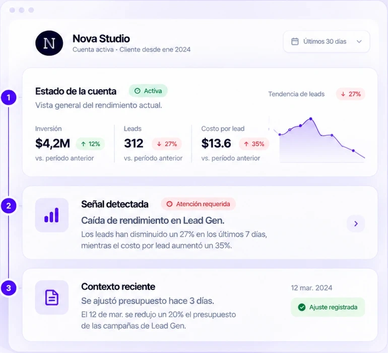

01 · Contexto
Todo parte con el contexto correcto.
GISBA reúne la información relevante de cada cuenta para que tu equipo entienda qué está pasando antes de decidir dónde actuar.
Conecta lo que está pasando ahora con el contexto reciente de la cuenta.
